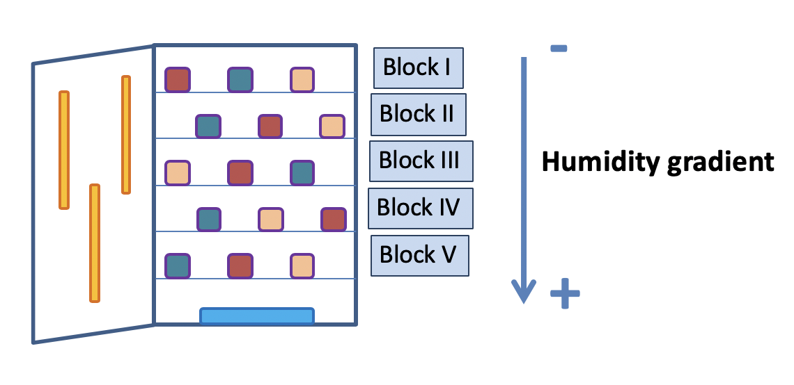
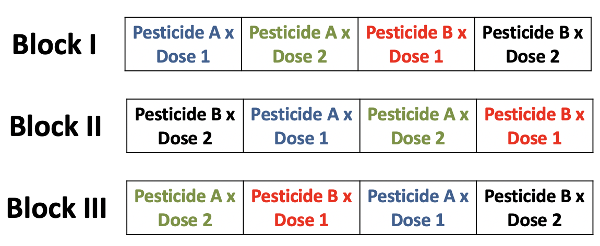
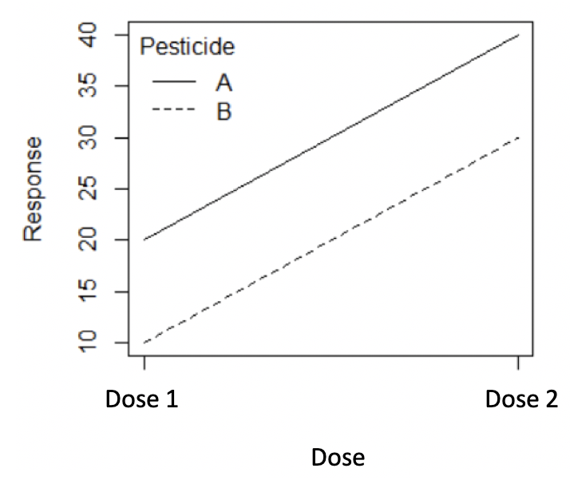

set.seed(853)
number_of_people <- 5000
population <-
tibble(
person = c(1:number_of_people),
smoking_status = sample(
x = c("Smoker", "Non-Smoker"),
size = number_of_people,
replace = TRUE,
prob = c(0.2,0.8)
)
)Experimental Studies
Studies where the researchers assign treatments to cases are called experiments. When this assignment includes randomization, e.g., using a coin flip to decide which treatment a patient receives, it is called a randomized experiment. Randomized experiments are fundamentally important when trying to show a causal connection between two variables.
Establishing Causality
A treatment (exposure variable) will often be a binary variable that is either 0 or 1. It is 0 if the person is not treated, which is to say they are in the control group, and 1 if they are treated.
We will typically have some outcome of interest, Y, for each person or observational unit, and that could be categorical or continuous.
A treatment is causal if the outcome for a person, given they were not treated, is different to their outcome given they were treated.
If we could both treat and control the one individual at the one time, then we would know that it was only the treatment that had caused any change. However, the fundamental problem of causal inference is that we cannot both treat and control the same individual at the same time.
we instead compare the average of two groups — all those treated and all those not.
we estimate the counterfactual at a group level because of the impossibility of doing it at an individual level.
this trade-off allows us to move forward but comes at the cost of certainty.
we must instead rely on randomization, probabilities, and expectations.
Controlled Experiments
Controlled experiments are a scientific test (or a series of tests) to verify how one or more conditions (treatments - variables that are controlled by the scientist) effect one or more outcome (response) variables. We usually consider a default of there being no effect and we look for evidence that would cause us to change our mind.
Design of experiments can produce an experiment that efficiently answers the questions of interest. The scientific method involves:
(a) Stating a hypothesis
(b) Planning an experiment to objectively test the hypothesis
(c) Observing and carefully collecting data
(d) Interpreting experimental results Principles of Experimental Design
Randomization. Subjects should be randomly selected from the population (where possible) and randomly divided into treatment groups to avoid unintentional selection bias in the groups and to account for variables that cannot be controlled. For example, some patients may be more susceptible to a disease than others due to their dietary habits. In this example dietary habit is a confounding variable, which is defined as a variable that is associated with both the exposure and outcome variables. Randomizing patients into the treatment or control group helps even out such differences.
Replication. A sufficient number of subjects should be used to ensure that randomization creates groups that resemble each other closely and to increase the chances of detecting differences among the treatments when such differences actually exist. In a single study, we replicate by collecting a sufficiently large sample. What is considered sufficiently large varies from experiment to experiment, but at a minimum we want to have multiple subjects per treatment group.
Local Control (Blocking). Researchers sometimes know or suspect that variables, other than the treatment, influence the response. Under these circumstances, they may first group individuals based on this variable into blocks and then randomize cases within each block to the treatment groups. This strategy is often referred to as blocking. For instance, if we are looking at the effect of a drug on heart attacks, we might first split patients in the study into low-risk and high-risk blocks, then randomly assign half the patients from each block to the control group and the other half to the treatment group. This strategy ensures that each treatment group has the same number of low-risk patients and the same number of high-risk patients.
Steps of Experimentation
1. Define the Problem and Objectives
- Clearly state the research question and objectives.
- Establish a logical progression: Objectives → Scientific Hypotheses → Statistical Hypotheses.
- Examples:
- Investigate the effect of Vitamin C on odontoblast length (cells responsible for tooth growth).
- Determine the lethal dose of a pesticide for an agricultural pest.
- Identify the optimal temperature settings for efficient machine operation.
2. Define Experimental Conditions
- Controlled conditions: Experiments conducted in controlled environments (e.g., greenhouses, laboratories, experimental stations).
- Less controlled conditions: Field studies in natural settings (e.g., farms, forests).
3. Identify Variables of Interest
- Outcome Variable (response variable): The outcome being measured.
- Example: Odontoblast length in guinea pigs, blood pressure rates.
- Treatment Factors and Levels (exposure variables): Variables manipulated in the experiment.
- Quantitative example: Vitamin C dose (0.5, 1, 2 mg/day).
- Qualitative example: Diet type (natural vs. artificial).
- Local Control (Blocking) Factors: Variables controlled to reduce variability (e.g., environmental conditions, batch effects).
4. Identify Experimental and Observational Units
- Experimental Unit: The smallest unit to which a treatment is randomly assigned.
- Examples: 60 guinea pigs, a plot of land with 200 trees, a section of a laboratory bench with 20 Petri dishes.
- Observational Unit: The entity from which data is collected.
- Examples: A single insect, tree, or Petri dish.
5. Define Observations to be Made
- Qualitative Observations: Presence or absence of a feature (e.g., morphological traits).
- Quantitative Observations: Measurable data (e.g., weight, height, count, proportion).
- Ordered Observations: Ranked data with an inherent order (e.g., disease severity, grading scales).
6. Select the Experimental Design
- Choose the simplest design that meets the study’s needs without oversimplifying.
7. Conduct the Experiment
- Ensure bias-free procedures by considering:
- Who is conducting the experiment.
- The location of the experiment.
- Start and end dates.
- The relevance and feasibility of the experiment.
- Associated costs.
8. Analyze Data and Interpret Results
- Conduct analysis according to the experimental design.
- Interpret results within the context of:
- Experimental conditions.
- Tested hypotheses.
- Established scientific knowledge.
- Consider the potential consequences of incorrect conclusions.
More on Randomization
The key to telling a causal story is the counterfactual: what would have happened in the absence of the treatment. This means that establishing the control group is critical because when we do that, we establish the counterfactual. What we hope to be able to do is to find treatment and control groups that are the same, but for the treatment.
The benefits to randomization are:
If a random assignment of treatment and controls groups is done then significant results can be concluded as causal or cause and effect conclusions. That is, that the treatment caused the result.
If random selection is done where the subjects are randomly selected from some population, then the results can be extended to that population. The random assignment is required for an experiment. When both random assignment and random selection are part of the study then we have a completely randomized experiment. Without random assignment (i.e., an observational study) then the treatment can only be referred to as being related to the outcome.
To explore ideas of randomization, we simulate a population, and then randomly sample from it. We will set it up so that 20% of the population are smokers, and the rest are not.
Let’s look at population characteristics
population %>%
count(smoking_status)# A tibble: 2 × 2
smoking_status n
<chr> <int>
1 Non-Smoker 4003
2 Smoker 997Now let’s sample from the population and randomly assign a treatment and control group.
set.seed(853)
sample_size <- 1000
sample <-
population %>%
sample_n(sample_size) %>%
mutate(group = sample(
x = c("Treatment", "Control"),
size = sample_size,
replace = TRUE
))Now let’s look at sample characteristics within each group (treatment and control). Is the distribution of population characteristics reflected within each group?
sample %>%
count(group, smoking_status) %>%
group_by(group) %>%
mutate(prop = n / sum(n)) # A tibble: 4 × 4
# Groups: group [2]
group smoking_status n prop
<chr> <chr> <int> <dbl>
1 Control Non-Smoker 364 0.747
2 Control Smoker 123 0.253
3 Treatment Non-Smoker 415 0.809
4 Treatment Smoker 98 0.191Internal Validity
- Internal validity is achieved when the only difference between the treatment and control groups is the treatment itself.
- This ensures that the control group serves as a true counterfactual, allowing us to attribute differences in outcomes solely to the treatment.
- In other words, our estimates reflect the true effect of the treatment rather than other confounding factors.
- With strong internal validity, we can confidently make claims about causal relationships within the experiment.
External Validity
- External validity refers to whether our experimental findings generalize beyond the study.
- This requires:
- A sample that represents the broader population.
- An experimental setup that mirrors real-world conditions.
- A sample that represents the broader population.
- If these conditions hold, our results are applicable outside the experiment.
- Randomization is key to achieving external validity:
- First, random selection ensures that the study group is representative.
- Second, random assignment to treatment and control ensures comparability within the experiment.
- First, random selection ensures that the study group is representative.
Example: Tooth Growth
ToothGrowth is a built-in R dataset from a study that examined the effect of Vitamin C dose and delivery on the length of the odontoplasts, the cells responsible for teeth growth, in 60 guinea pigs, where tooth length was the measured outcome variable.
Randomization
Randomization of subjects in an experiment helps spread any variability that exists naturally between subjects evenly across groups.
In the experiment that yielded the ToothGrowth dataset, guinea pigs were randomized to receive Vitamin C either through orange juice or ascorbic acid, indicated in the dataset by the supp variable.
data("ToothGrowth")Replication
Replication means you need to conduct an experiment with an adequate number of subjects to achieve an acceptable statistical power.
Let’s examine the ToothGrowth dataset to make sure they followed the principle of replication. We’ll use a dplyr function called count to help us.
ToothGrowth %>% count(supp) supp n
1 OJ 30
2 VC 30Analysis
Suppose you know from previous studies that the average length of a guinea pigs odontoplasts is 18 micrometers. Therefore, you hypothesize that odontoplast length is equal to 18. To “test” this hypothesis, let’s see how the value of 18 compares to our sample data by looking at the mean and standard deviation.
ToothGrowth %>% pull(len) %>% mean[1] 18.81333It’s natural to wonder if there is a difference in tooth length by supplement type. Use group_by and summarise to explore this and create an appropriate visualization using ggplot.
ToothGrowth %>% More on Blocking
Often there are covariates in the experimental units that are known to affect the response variable and must be taken into account. Ideally an experimenter can group the experimental units into blocks where the within block variance is small, but the block to block variability is large.
- For example, in testing a drug to prevent heart disease, we know that gender and age also impact the outcome. We may want to partition our study participants into gender and age groups and then randomly assign the treatment (placebo vs drug) within the group.
Often blocking variables are not the variables that we are primarily interested in, but must nevertheless be considered.
Randomized Complete Block Design (RCBD)
- The goal of RCBD is to maximize differences between blocks while ensuring similarity within each block.
- This design helps control for known sources of variability, such as:
- Temperature differences within a greenhouse.
- Variation across different days.
- Variation in fertility or drainage differences in a field
- Temperature differences within a greenhouse.
- Key features:
- Each block acts as a replicate.
- The number of observational units per block equals the number of treatments.
- Each treatment appears exactly once per block, with the order randomized within the block.
- Each block acts as a replicate.
Examples of blocks
- Laboratory chamber with a humidity gradient inside

- Laboratory chambers with homogeneous temperature and humidity inside

- A field with a fertility gradient

- A greenhouse with a temperature gradient during the day

Example: Oatvar
The dataset oatvar in the faraway library contains information about an experiment on eight different varieties of oats.
The area in which the experiment was done had some systematic variability and the researchers divided the area up into five different blocks in which they felt the area inside a block was uniform while acknowledging that some blocks are likely superior to others for growing crops.
Within each block, the researchers created eight plots and randomly assigned a variety to a plot. This type of design is called a Randomized Complete Block Design (RCBD) because each block contains all possible levels of the factor of primary interest.
Visualise the data
oatvar <- faraway::oatvar
ggplot(oatvar, aes(y=yield, x=block, colour = variety, group = variety)) +
geom_point(size = 5) +
geom_line()Use group_by and summarise to look at the average yield within each variety.
oatvar %>% Look at the results of using lm with variety and block as predictors.
lm(....)Factorial Experiments
Experiments that involve more than one treatment factor are called factorial experiments. In general, the number of treatments in a factorial experiment is the product of the numbers of levels of the treatment factors. The disadvantage of this is that the number of treatments increase very quickly.
Example: Pest control
- Factor 1: two pesticides (A and B)
- Factor 2: two doses
- The experiment has a total of \(2\times 2 = 4\) treatments
Example: The Tooth Growth data
- Factor 1: two deliveries of vitamin C (orange juice, ascorbic acid)
- Factor 2: three doses (0.5, 1, and 2 mg/day)
- The experiment has a total of \(2\times 3 = 6\) treatments
Designs
For the Pesticide example, suppose 3 replicates and a completely randomized design

For the Pesticide example, suppose 3 replicates and a randomized complete block design

Interactions
The major advantage of factorial experiments is that they allow for the detection of interactions.
Two factors are said to interact if the effect of one, on the response variable, depends upon the level of the other.
If they do not interact, they are said to be independent.
Interaction Plots
A set of parallel lines indicates no interaction

The crossing over of lines indicates an interaction

Factorial Experiments: Tooth Growth
We’ve already seen to Tooth Growth data that examined the effect of Vitamin C delivery and dose on the length of the odontoplasts, the cells responsible for teeth growth, in 60 guinea pigs, where tooth length was the measured outcome variable.
We initially looked at how the Vitamin C delivery impacted tooth growth. Now lets consider what happens when we bring dose into the analysis. In this case we have two factors to consider instead of 1.
- Vitamin C delivery has 2 levels
- dose has 3 levels (0.5, 1, and 2 mg/day)
data("ToothGrowth")
ggplot(ToothGrowth, aes(x = as.factor(dose), y = len, colour = supp)) +
geom_boxplot()